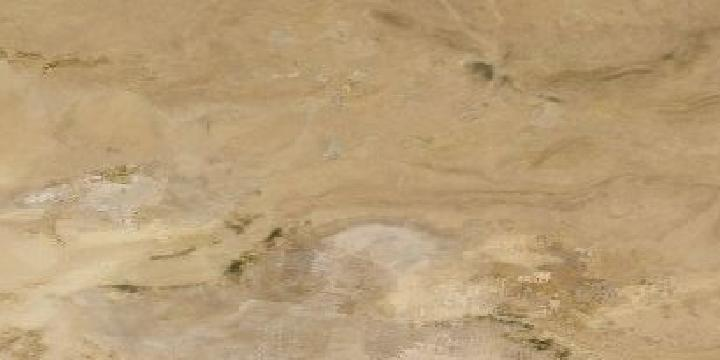

只看實測數字選出的兩個地方：奧勒岡中部與墨西哥的 El Pinacate，正是 1960 年代 Apollo 太空人的地質訓練場。現在常用的類比目錄卻沒有收錄它們。
目錄外的候選
這些地方不在已知類比場址附近，也不在挑戰頁點名的南極、阿塔卡馬、冰島與夏威夷，卻在月球或火星目標的排序裡排得很前面。每一個都附上哪裡像、哪裡不像，以及可以拿來測試什麼。它們是提案，不是驗證過的類比場址。
三個意外
Chott el Djerid（火星鹽類）與 Harrat ash Shaam（行星坑洞）都不在我們的目錄裡，系統卻把它們排在前面。事後查文獻，才發現研究者已經提出或使用過它們。
在軌道儀器的尺度上，沒有任何地球表土能同時符合月球的 FeO、TiO₂、K 與 Th。改看岩石時，59 個月球目標中有 25 個能完全符合：差距有一部分是地球風化造成的。
八個候選

奧勒岡中部（Bend 與 Newberry 火山一帶）
44.19°N, 121.22°W · 最近的已知類比：Shifting Sands dune field/Christmas Valley sand dunes 117 km
- 為誰找到
- Artemis 南極資源用途的地球上限 0.80，全世界只有 7 個窗格達到，這裡是其中之一。知名場址反而較低：Ries 與 Lava Beds 0.60、Meteor Crater 0.30、Craters of the Moon 0。
- 文獻與歷史
- 1964 到 1966 年間，Apollo 太空人在這一帶接受過地質訓練（熔岩流、黑曜岩流、浮石平原）。現在常用的類比場址目錄沒有收錄它：這是一個被遺忘的訓練場。
- 生命採樣紀錄
- 50 公里內有 6 筆公開的微生物定序樣本，都不是極端環境。
- 可以測試什麼
- 月面資源原料的化學對照、玄武岩與浮石地形上的行走與取樣。

El Pinacate 火山區（墨西哥索諾拉）
31.62°N, 113.04°W · 最近的已知類比：Gran Desierto 127 km
- 為誰找到
- 月球天窗坑（地下探測用途）：第 1 名（分數 100.0）
- 哪裡像
- 裸露地表岩性（ISRU 原料）乾燥火山作用熔岩管地形洞穴或坑道野外可到達後勤
- 哪裡不像
- 年均溫極低溫
- 文獻與歷史
- 1965 到 1970 年，NASA 在這裡訓練 Apollo 太空人，包括 Apollo 14 與 Apollo 17 的組員。現在常用的類比目錄沒有收錄。
- 生命採樣紀錄
- 50 公里內沒有公開的微生物定序樣本（沒人採過，不代表沒有生命）。
- 可以測試什麼
- 瑪珥火山口與熔岩流：天窗坑與熔岩管搜尋方法、地下空間的通訊與導航。

Harrat ash Shaam 玄武岩高原（敘利亞南部與約旦東北）
31.98°N, 37.41°E · 最近的已知類比：Nahal Kasuy mega-ripple filed 321 km
- 為誰找到
- Marius Hills 天窗坑：第 1 名（分數 84.3）
- 哪裡像
- 裸露地表岩性（ISRU 原料）日夜溫差乾燥細粒鬆散表土火山作用熔岩管地形野外可到達後勤
- 哪裡不像
- 年均溫極低溫洞穴或坑道
- 文獻與歷史
- 2018 與 2019 年有兩篇學會摘要提出：這裡的「jubot」窪地可以當作行星表面坑洞的類比。系統沒有讀過這些研究，卻把這裡排在月球天窗坑的第一名。目前的安全情勢可能讓實地工作困難。
- 生命採樣紀錄
- 50 公里內沒有公開的微生物定序樣本（沒人採過，不代表沒有生命）。
- 可以測試什麼
- 坑洞成因（塌陷或其他）的判讀、玄武岩高原上的移動。

Harrat Khaybar 與 Harrat Rahat 熔岩原（沙烏地阿拉伯，麥地那附近）
23.44°N, 39.99°E · 最近的已知類比：Nahal Kasuy mega-ripple filed 880 km
- 為誰找到
- Marius Hills 天窗坑：第 2 名（分數 83.2）
- 哪裡像
- 裸露地表岩性（ISRU 原料）日夜溫差正午太陽仰角乾燥火山作用熔岩管地形野外可到達後勤
- 哪裡不像
- 年均溫極低溫洞穴或坑道
- 文獻與歷史
- 我們沒有找到把這裡當作月球或火星類比的研究。這片熔岩原裡有 Umm Jirsan 熔岩管，長約 1.5 公里，是沙烏地阿拉伯已知最長的。
- 生命採樣紀錄
- 50 公里內沒有公開的微生物定序樣本（沒人採過，不代表沒有生命）。
- 可以測試什麼
- 熔岩管入口與天窗坑的偵測、玄武岩熔岩流與流紋岩穹丘並存的地形。

加拿大北極 Victoria Island 西部
72.04°N, 108.93°W · 最近的已知類比：霍頓撞擊坑（德文島） 702 km
- 為誰找到
- Artemis III 南極候選區（Mons Mouton）：第 1 名（分數 64.7）
- 哪裡像
- 裸露地表岩性（ISRU 原料）極低溫低太陽角水冰（資源）細粒鬆散表土
- 哪裡不像
- 年均溫日夜溫差撞擊作用野外可到達
- 文獻與歷史
- 文獻很少：有一篇以島上 Gossan Hill 為火星凍土礦物類比的研究，但沒有以月球南極為目標的研究。
- 生命採樣紀錄
- 50 公里內沒有公開的微生物定序樣本（沒人採過，不代表沒有生命）。
- 可以測試什麼
- 低太陽角與長陰影下的導航與相機曝光、凍土、極地後勤。

錫斯坦盆地（阿富汗與伊朗交界的 Hamun 湖區）
31.26°N, 61.89°E · 最近的已知類比：Lut desert 306 km
- 為誰找到
- Jezero 撞擊坑：第 2 名（分數 82.1）
- 哪裡像
- 裸露地表岩性日夜溫差乾燥含水礦物（資源）水流作用缺水鹽類野外可到達
- 哪裡不像
- 年均溫極低溫長年冰凍紫外線低氣壓
- 文獻與歷史
- 我們沒有找到把這裡當作火星類比的研究。這是一個內流盆地，Hamun 湖會隨上游來水擴張與乾涸，1998 到 2005 年乾旱時幾乎完全乾掉。
- 生命採樣紀錄
- 50 公里內沒有公開的微生物定序樣本（沒人採過，不代表沒有生命）。
- 可以測試什麼
- 乾涸湖床與三角洲沉積、鹽類、風蝕：對照 Jezero 的湖相沉積與三角洲。

Chott el Djerid 鹽湖（突尼西亞）
34.13°N, 8.46°E · 最近的已知類比：廷托河源頭（佩尼亞德耶羅礦區，西班牙） 1408 km
- 為誰找到
- Jezero 撞擊坑：第 5 名（分數 80.8）
- 哪裡像
- 裸露地表岩性乾燥含水礦物（資源）水流作用鹽類野外可到達後勤
- 哪裡不像
- 年均溫極低溫長年冰凍紫外線低氣壓
- 文獻與歷史
- 研究者已經在用：2010 到 2012 年歐洲團隊在這裡做過火星類比調查，層狀氯鹽與火星高緯度的氯鹽相似，鑽到 3.6 公尺深仍找到微生物。它不在我們的目錄裡，系統卻把它排進前五名。
- 生命採樣紀錄
- 50 公里內沒有公開的微生物定序樣本（沒人採過，不代表沒有生命）。
- 可以測試什麼
- 鹽類沉積中的生命痕跡、地下水與鹽殼的偵測。

阿拉斯加西南部（Kuskokwim 河中游）
61.26°N, 158.65°W · 最近的已知類比：萬煙谷（阿拉斯加） 367 km
- 為誰找到
- Jezero 資源用途（FeO、K、Th）的地球上限 0.57，全世界只有 15 個窗格達到，這裡是其中一群。10 個有實測化學的火星類比場址全部 0 分。
- 文獻與歷史
- 我們沒有找到把這一帶當作火星類比的研究（阿拉斯加其他地方，例如 Kobuk 沙丘與 Katmai，有人研究過）。
- 生命採樣紀錄
- 50 公里內沒有公開的微生物定序樣本（沒人採過，不代表沒有生命）。
- 可以測試什麼
- 火星表土化學的地球對照樣本，用來校正儀器。
排序與地球上限來自本站的固定規則；文獻與歷史是 2026 年 11 月 13 日人工查證的摘要。地球無法重現的條件（重力、真空或稀薄大氣、輻射）對每一個候選都一樣成立。